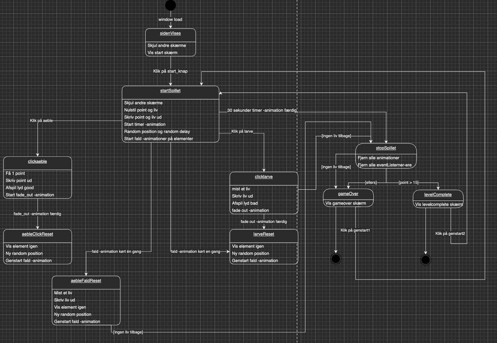

Tema 04 Grundlæggende animation
Temabeskrivelse
I dette tema er jeg blevet introduceret for javascript, dette har jeg gjort i forbindelse med css animationer til at kunne lave et spil. Dette spil har jeg selv designet og kodet helt fra bunden. Jeg har udviklet et spildesign med UI-elementer, figurelementer, baggrundsdesign i Adobe Illustrator. Med min læring i dette tema har jeg lært at arbejde dynamisk med websites samt skabe interaktive elementer, som burgermenuer.
Link til afleveringer
Java
Herunder ses hvordan jeg har kodet noget af mit spil i javascript.
Statemachine diagram
Pitch
Spillet skal foregå i en skov/æbletræs plantage hvor der falder æbler Ned fra træerne. Her skal man samle alle de gode æbler og undgå at samle dem med larver. Hvis man samler dem med larver så mister man liv.
Spilbaggrund fra start til slut
Her ses min skitsering på tegning til det endelige resultat. Det at skitsere i denne opgave, har gjort at jeg kunne tænkte mere åbent og kreativt om mine ideer. De håndtegnet skitser har været et centralt værktøj for mig i denne designproces, stimuleret den kreative proces